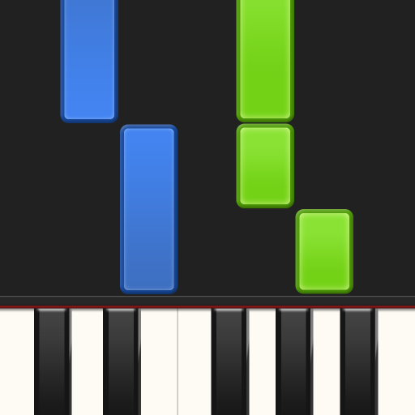

O Synthesia é um aplicativo de música voltado principalmente para o aprendizado de piano. Ele utiliza um sistema visual de notas caindo na tela, semelhante a jogos rítmicos, ajudando o usuário a tocar mesmo sem saber ler partituras. O app permite praticar com teclado virtual ou conectar pianos digitais via MIDI/USB, além de oferecer modos de treino, metrônomo e suporte a arquivos MIDI para aprender diferentes músicas. É bastante popular entre iniciantes e estudantes de piano.